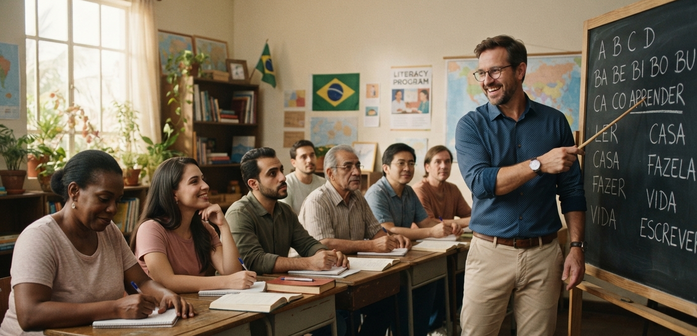
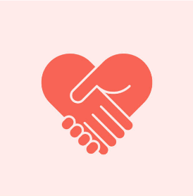
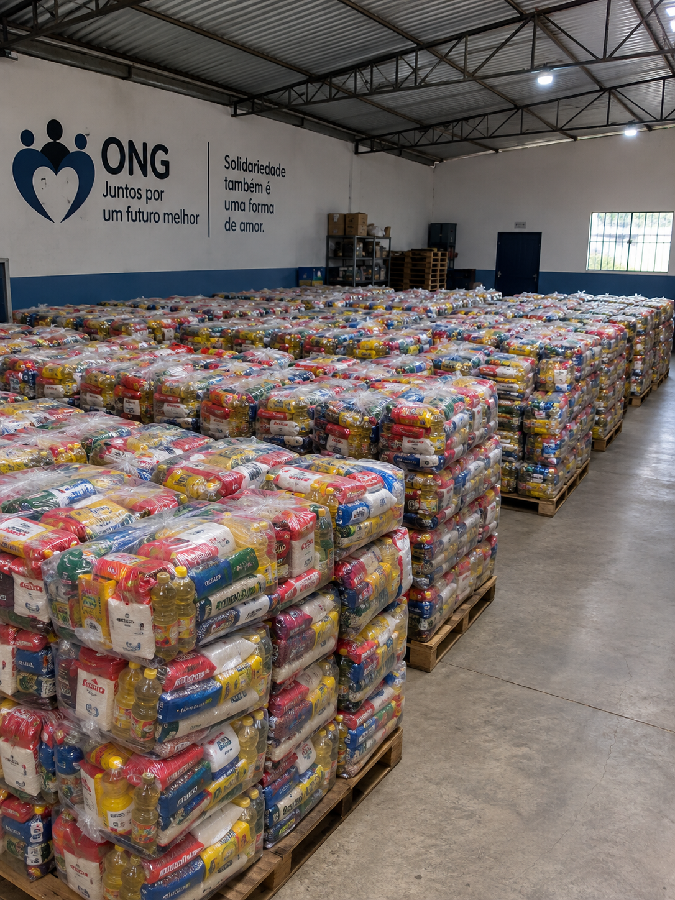

Alfabetização de Jovens e Adultos
Aulas noturnas focadas em erradicar o analfabetismo na região comunitária, promovendo independência cidadã.


Conheça os projetos ativos e descubra como você pode fazer parte dessa corrente do bem.
Aulas noturnas focadas em erradicar o analfabetismo na região comunitária, promovendo independência cidadã.

Arrecadação e logística de entrega de alimentos não perecíveis para famílias cadastradas em situação de risco.

Siga os passos abaixo para se tornar um voluntário: